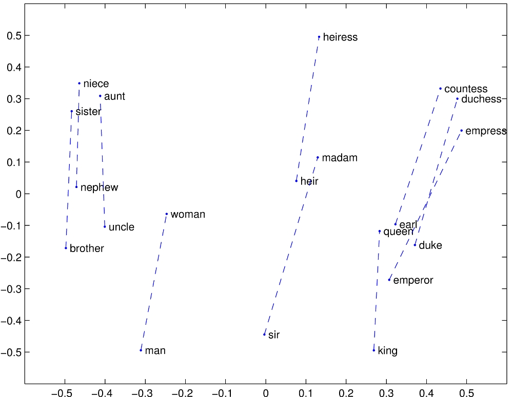

These notes are used for STAT 709 “Mathematical Statistics” at the University of Wisconsin–Madison. They are a learning aid rather than a substitute for a textbook; corrections and questions are welcome.
Overview.
Route through the lecture. How do we turn a statistical model into an actual estimator? This lecture compares two recurring answers: match features of the data to population moments, or choose parameters that give the observed data the largest likelihood. We begin with familiar means and variances, then see how the same ideas lead to factor models, word embeddings, topic models, and community detection. These examples connect statistical information with computation: a good estimation principle still needs a usable algorithm.
Information and computation. Lecture 7 showed why bias alone does not determine the quality of an estimator. Here we ask what information a method uses, whether that information identifies the target, and how hard the resulting equations are to solve. Large-sample guarantees will be developed later; today we focus on constructing estimators and understanding their limitations.
Instructor’s NoteCultural difference: estimation versus prediction
As an informal picture, statistics often starts by asking what generated the data, whereas computer science often starts by asking what predicts well. Think of these as two emphases:
Statistics: modeling, assumptions about data generation, interpretation, uncertainty, and domain expertise.
Computer science: prediction accuracy, willingness to use black-box models, automation, and the user interface.
The boundaries overlap, but the contrast is useful when reading papers. Leo Breiman’s two-cultures article [3] invites exactly this discussion. Is there a diverging trend in recent years, or are the two approaches moving closer together?
Learning goals
Construct moment estimators and check existence and identifiability.
Explain how low-order moments can reveal low-dimensional structure.
Derive likelihood estimators, including boundary and rank issues.
Separate statistical guarantees from computational difficulty.
1. Method of moments
1.1. Classical recipe
Population and sample. Let \(X_1,\ldots,X_n\) be i.i.d. real observations from \(P_\theta\), where \(\theta\in\Theta\subset\R^k\), and assume \(\E_\theta|X_1|^k<\infty\). The population moments and empirical moments are \[\mu_j(\theta)=\E_\theta X_1^j, \qquad \hat\mu_j=\frac1n\sum_{i=1}^nX_i^j, \qquad 1\le j\le k.\]
Match moments. Write \(h(\theta)=(\mu_1(\theta),\ldots,\mu_k(\theta))\) and \(\hat\mu=(\hat\mu_1,\ldots,\hat\mu_k)\). The method of moments (MoM) solves \(h(\hat\theta)=\hat\mu\) for \(\hat\theta\in\Theta\).
Invert the map. If \(h:\Theta\to h(\Theta)\) is one-to-one and the observed \(\hat\mu\) lies in \(h(\Theta)\), then
\[\hat\theta=h^{-1}(\hat\mu).\]
(1)Measurable estimate. As with every estimator, the inverse or the chosen solution must be measurable as a function of the data.
What can go wrong?
Moment identification means that different parameter values have different selected population moments: \(h\) is one-to-one. This is stronger than asking the full distributions to be different. Even an identifiable model can have an uninformative choice of moments. A sample moment vector outside \(h(\Theta)\) gives no solution, and a noninjective \(h\) can give several solutions. An estimator therefore needs both a population identification argument and a rule for handling the actual data.
Looking ahead.
The intuition behind consistency is that empirical moments approach population moments as \(n\) grows. If a law of large numbers applies, the empirical inverse is defined with probability tending to one, and \(h^{-1}\) is continuous at \(h(\theta)\), the corresponding moment estimate approaches \(\theta\) in probability. Lecture 9 supplies the convergence language and tools; consistency is not automatic from the name “MoM.”
Suppose the observations are i.i.d. with finite second moment, mean \(\mu\in\R\), and variance \(\sigma^2>0\). Here \((\mu,\sigma^2)\) names the quantities we want to estimate; it does not specify the entire distribution. The moment equations are \[\mu_1=\mu,\qquad \mu_2=\mu^2+\sigma^2.\] Replacing the moments with empirical averages gives \[\hat\mu=\bar X,\qquad \hat\sigma^2=\hat\mu_2-\hat\mu_1^2 =\frac1n\sum_i(X_i-\bar X)^2=:v_n.\] For \(n\ge2\), the usual sample variance is \[S^2=\frac1{n-1}\sum_i(X_i-\bar X)^2, \qquad v_n=\frac{n-1}{n}S^2.\] If all observations coincide, \(v_n=0\). It is still a sensible empirical variance, but it lies on the boundary of the enlarged space \(\sigma^2\ge0\), not inside the original space \(\sigma^2>0\).
This simple example already tells us several things. First, the moment calculation needs no normality assumption. Second, in the normal family \((\bar X,v_n)\) is sufficient, just as \((\bar X,S^2)\) is. The mean estimate is unbiased; it is the variance component \(v_n\) that is biased slightly downward. Under normal sampling and \(n\ge2\), that component has smaller MSE than \(S^2\). Exercise 6 gives the full bias–variance calculation, including the normal fourth moments.
For other families, the mean and empirical variance need not be sufficient. For example, in Laplace (double-exponential) and logistic location models they can lose information about location; explicit examples are in Exercise 12. Losing information suggests an opportunity for a better procedure, but does not by itself prove that a particular alternative has smaller MSE at every parameter value.
Synthetic observations 1, 2, 3: the empirical variance uses denominator n. The fitted interval has the same mean and variance.
Model moments. Let \(X_i\stackrel{\mathrm{iid}}\sim\mathrm{Unif}([a,b])\), with \(a<b\). Here \(a=\theta_1\) and \(b=\theta_2\) in the original notation. Then \[\mu_1=\frac{a+b}{2},\qquad \mu_2=\frac{a^2+ab+b^2}{3},\qquad \sigma^2=\frac{(b-a)^2}{12}.\]
Endpoint estimates. The same two moment equations yield
\[\hat a=\bar X-\sqrt{3v_n},\qquad \hat b=\bar X+\sqrt{3v_n}.\]
(2)Center and width. Thus the estimated center is the sample mean and the estimated half-width is \(\sqrt{3v_n}\). For \(n\ge2\) under this continuous model, \(v_n>0\) almost surely. The exceptional zero-variance sample again gives a boundary pair.
Support information. The extrema \((X_{(1)},X_{(n)})\) are sufficient for \((a,b)\); the moment estimate generally uses information beyond that pair while failing to exploit the support constraint efficiently. In particular, its estimated interval need not contain every observation. Unbiased endpoint estimates built from the extrema and their exact risks are derived in Exercise 2. Their total MSE is of order \(n^{-2}\) for fixed \(a<b\); the moment endpoints have total MSE of order \(n^{-1}\). The exercise justifies this rate comparison without assuming a CLT. The more detailed comparison remains a useful homework topic.
Instructor’s NoteMoments as a fingerprint
Intuitively speaking, moment matching gives the model a few clues about the data: where its center is, how spread out it is, and perhaps how asymmetric it is. We look for a parameter with the same fingerprint. But a fingerprint made from only two numbers can miss something obvious in a plot—for a uniform model, the leftmost and rightmost observations are especially revealing. For simple problems we solve the equations by hand; for complicated ones we turn to numerical routines or design new algorithms. Finding the equations is only the first step.
1.2. Generalized method of moments
Low priority—not examined: More moment conditions than parameters
Moment identification means that different parameter values have different selected population moments: \(h\) is one-to-one. This is stronger than asking the full distributions to be different. Even an identifiable model can have an uninformative choice of moments. A sample moment vector outside \(h(\Theta)\) gives no solution, and a noninjective \(h\) can give several solutions. An estimator therefore needs both a population identification argument and a rule for handling the actual data.
For a fixed \(0<\alpha<1\), \(\operatorname{LeakyReLU}(t)=\max\{t,\alpha t\}\): a line of slope \(1\) for positive inputs and slope \(\alpha\) for negative inputs. Its expectation exists when \(\E|X|<\infty\). No neural-network machinery is needed for this example.
Choose features. Let \(X_i\in\R^p\), \(\theta\in\Theta\subset\R^k\), and choose \(g:\R^p\times\Theta\to\R^m\) so that \(\E_{\theta_0}g(X_i,\theta_0)=0\) at the true parameter \(\theta_0\). The expectations must exist. For scalar data, possible coordinates are \[g_j(x,\theta)=x^j-\mu_j(\theta),\quad \cos(jx)-V_j(\theta),\quad \operatorname{LeakyReLU}(jx)-\xi_j(\theta),\] where each subtracted quantity is its corresponding model expectation. LeakyReLU is simply one possible nonlinear feature.1
Weight residuals. The generalized method of moments (GMM) estimator minimizes
\[\hat\theta\in\arg\min_{\theta\in\Theta}Q_n(\theta),\qquad Q_n(\theta)=\bar g_n(\theta)^\top W\bar g_n(\theta),\qquad \bar g_n(\theta)=\frac1n\sum_i g(X_i,\theta),\]
(3)where \(W\) is a symmetric positive definite \(m\times m\) matrix. There are \(m\) equations and \(k\) parameters; overidentification means \(m>k\), not \(m>p\). Sample equations may disagree, so GMM finds a weighted compromise. If \(\Theta\) is nonempty and compact and \(g(x,\theta)\) is continuous in \(\theta\) for each observed \(x\), a minimum is attained. Uniqueness and population identification require separate arguments; recall the earlier moment identification discussion.
Ordinary moments as a special case. When \(m=k\) and \(g_j(x,\theta)=x^j-\mu_j(\theta)\), any simultaneous zero of all residuals has objective value zero. Positive definiteness makes these exactly the minimizers whenever such a zero exists. Thus ordinary MoM is a special case for any positive definite \(W\), including \(I_k\). Exercise 7 proves this and works out a simple overidentified compromise.
Instructor’s NoteWhich clues should we trust?
Imagine several measuring instruments giving slightly different answers. We want reliable instruments to have more say, and we do not want two almost identical instruments to count as two independent pieces of information. This is the role of the weighting matrix. More moments give us more clues, but a very noisy clue can make a poor guide.
For i.i.d. observations with nonsingular finite covariance \(\Omega=\operatorname{Cov}_{\theta_0}(g(X_i,\theta_0))\), the asymptotically optimal weight in the regular, correctly specified GMM setting is \(\Omega^{-1}\). This is a preview: consistency, derivative/rank assumptions, and estimation of \(\Omega\) are part of the theory, not consequences of compactness alone. See [7, 8].
2. Examples
Moments are simple statistics, but they can reveal substantial structure. When the dimension is large, low-order moments combined with spectral or tensor methods may provide a fast route to useful estimates. The examples below retain the same recipe: identify a population relationship, estimate its moments, and solve the resulting algebraic problem.
2.1. Second moments and spectral methods
Factor model. Suppose \(Y_1,\ldots,Y_n\in\R^p\) are i.i.d. and \[Y_i=Bf_i+u_i,\qquad B\in\R^{p\times K},\quad \E f_i=0,\quad\operatorname{Cov}(f_i)=I_K,\quad \E u_i=0,\quad\operatorname{Cov}(u_i)=\Sigma.\]
Cross terms and covariance. Assume finite second moments, \(\operatorname{Cov}(f_i,u_i)=0\), and known \(\Sigma\). Independence between factors and noise would suffice for the zero cross-covariance condition. Then \[\operatorname{Cov}(Y_i)=BB^\top+\Sigma.\]
Estimate the identified target. The covariance alone does not distinguish \(B\) from \(BR\) for an orthogonal \(K\times K\) matrix \(R\). We therefore target \(L=BB^\top\) and form
\[A:=\hat L^0=\frac1n\sum_iY_iY_i^\top-\Sigma, \qquad \E A=L.\]
(4)Known noise covariance. If \(\Sigma\) must also be estimated, that is an additional estimation step; the displayed unbiasedness statement assumes it is known.
Keep the positive signal directions
What changes when we allow one more direction?
- Rank bound K
- 1
- Projected diagonal
- 3, 0, 0
- Actual rank
- 1
- Squared Frobenius error
- 1.25
Synthetic diagonal matrix. Increasing K to 3 still discards the negative eigenvalue.
- Rank bound K
- 1
- Projected diagonal
- 3, 0, 0
- Actual rank
- 1
- Squared Frobenius error
- 1.25
Synthetic diagonal matrix. Increasing K to 3 still discards the negative eigenvalue.
Use the structure.
Constrain the estimate. The target is positive semidefinite (PSD) and has rank at most \(K\). Write \(A=\sum_{j=1}^p\lambda_j u_j u_j^\top\) with \(\lambda_1\ge\cdots\ge\lambda_p\) and orthonormal \(u_j\). For \(1\le K\le p\), a closest PSD matrix of rank at most \(K\) in Frobenius norm is
\[\hat L=\sum_{j=1}^K(\lambda_j)_+u_j u_j^\top, \qquad (t)_+=\max\{t,0\}.\]
(5)Clipping and proof. Clipping negative eigenvalues matters: retaining a negative eigenvalue would contradict the structure of \(BB^\top\). Ties at the cutoff may give several equally close matrices. Exercise 3 proves the projection formula and the useful bound \(\|\hat L-L\|_F\le2\|A-L\|_F\), where \(\|C\|_F^2=\sum_{i,j}C_{ij}^2\). Projection can introduce bias; the bound is not a universal finite-sample MSE improvement theorem.
Instructor’s NoteKeep the signal directions
Think of the eigenvalues as a volume control for different directions. A factor model says only a few directions carry the common signal. The empirical matrix also contains noisy directions; spectral truncation turns those down to zero. It is the same broad instinct as regularization: use structure to avoid chasing every fluctuation in the sample.
Illustrative counts, not corpus data or a covariance matrix. GloVe fits weighted log co-occurrence counts; these raw counts show the input structure.
In natural language processing, a word embedding represents a word or token by a low-dimensional vector. GloVe [11] begins with co-occurrence counts: \(X_{ij}\) records how often word \(j\) occurs in the context of word \(i\). It fits a weighted least-squares model to log co-occurrence counts to learn word vectors. The connection here is the use of pairwise summaries to uncover low-dimensional structure; a co-occurrence matrix is not, in general, a sample covariance matrix.
Linear representations of concepts.
Vector offsets. A striking empirical pattern is that some semantic relationships appear as approximately parallel vector offsets. Writing \(e(w)\) for the learned embedding of word \(w\), the famous analogy is
\[e(\text{king})-e(\text{queen}) \ \approx\ e(\text{man})-e(\text{woman}).\]
(6)Published evidence. Figure 1 shows the original GloVe visualization, including these word pairs. Such linear representations give empirical support to the factor-model viewpoint: reusable concepts can contribute along shared directions.
Factor interpretation. A useful model is \(e(w)\approx Ba(w)\), where the columns of \(B\) are common semantic directions and \(a(w)\) contains the word’s loadings on them. The observed offsets motivate this representation; they do not establish the specific covariance assumptions of our earlier random factor model.

Instructor’s NoteConcepts as reusable directions
Intuitively speaking, a word vector can mix several ingredients: human, royal, male or female, and so on. Subtract queen from king and the shared royal ingredient cancels, leaving roughly the same contrast as man minus woman. This is the appeal of a factor model: a large collection of words can reuse a much smaller collection of conceptual directions. The model learns the directions from how people use words, without being handed a separate dictionary of those concepts.
A historical connection: \(n\)-grams.
Indicator moments. Earlier language models also used higher-order co-occurrence statistics. An \(n\)-gram is a block of \(n\) consecutive tokens, and an \(n\)-gram model predicts the next token from the preceding \(n-1\) tokens. Its block frequencies are empirical versions of the joint moments \[\E\!\left[\prod_{j=1}^n\mathbf1\{W_j=a_j\}\right] =\Pr(W_1=a_1,\ldots,W_n=a_n).\]
Meaning of moment order. Thus “\(n\)-th moments” here means products of \(n\) token indicators, not powers of arbitrary numeric word IDs.
Historical link. Shannon’s successive approximations to English used letter and word transition frequencies [12]; Brown et al. [4] developed count-based and class-based \(n\)-gram models. These methods connect moment statistics to conditional-probability estimation, which we revisit in Section 3.1.
2.2. Latent variable models and tensor decomposition
Low priority—not examined: One hidden topic, several observed words
Words are independent conditional on the topic. Without conditioning, the shared topic generally makes the words dependent.
Hidden topic and conditional sampling. Consider the single-topic document model of [1]. A document has an unobserved topic \(h\in\{1,\ldots,K\}\) with \(\Pr(h=j)=w_j>0\) and \(\sum_j w_j=1\). Conditional on that topic, its words are independent and identically distributed with vocabulary probability vector \(\mu_h\in\R^d\). Encode word \(i\) as the coordinate vector \(e_i\); thus \(x_t=e_i\) exactly when the \(t\)-th word is \(i\). The words are generally dependent before conditioning on \(h\).
Observable moments. For three words from the same document, conditional independence gives
\[\begin{aligned} M_2:=\E[x_1\otimes x_2]&=\sum_{j=1}^K w_j\mu_j\mu_j^\top, \end{aligned}\]
(7)\[\begin{aligned}M_3:=\E[x_1\otimes x_2\otimes x_3]&=\sum_{j=1}^K w_j\mu_j^{\otimes3}. \end{aligned}\]
(8)Array entries and empirical data. Here \(M_2\) is a \(d\times d\) matrix, or second-order tensor, and \(M_3\) is a \(d\times d\times d\) array. The tensor product satisfies \([a\otimes b\otimes c]_{rst}=a_rb_sc_t\). Exercise 8 derives both identities. Independent documents, each with at least three words, provide empirical versions by averaging the displayed products across documents.
Recover parameters. Our goal is to recover \((w_j,\mu_j)\) from \((M_2,M_3)\) and then replace the population moments by empirical ones. For \(K=1\), \(w_1=1\), \(\mu_1=\E x_1\), and \(M_2=\mu_1\mu_1^\top\), a rank-one structure reminiscent of the factor model. For several topics, we need more algebra.
Low priority—not examined: Whitening and orthogonal tensor decomposition
Exact two-topic example: weights (0.25, 0.75), topics (0.8, 0.2) and (0.2, 0.8). Equal axis scales; the transformed weighted vectors have unit length and zero inner product.
Whiten weighted topic directions. Assume \(K\le d\) and that \(\mu_1,\ldots,\mu_K\) are linearly independent. Then \(M_2\) has rank \(K\). Use its positive eigenvalues to write \(M_2=UDU^\top\), where \(U\in\R^{d\times K}\) has orthonormal columns and \(D\) is a positive diagonal \(K\times K\) matrix. Define
\[W=UD^{-1/2},\qquad W^\top M_2W=I_K, \qquad v_j=\sqrt{w_j}\,W^\top\mu_j.\]
(9)This rescaling is called whitening. The \(K\) vectors \(v_j\) form an orthonormal basis of \(\R^K\). The square-root weights are essential: the unweighted vectors \(W^\top\mu_j\) do not generally have unit length.
Decompose and recover. Transform all three indices of \(M_3\) with \(W\):
\[T:=M_3[W,W,W]=\sum_{j=1}^K\lambda_j v_j^{\otimes3}, \qquad \lambda_j=w_j^{-1/2}.\]
(10)For example, \(T_{abc}=\sum_{r,s,t}(M_3)_{rst}W_{ra}W_{sb}W_{tc}\). Once the orthogonal tensor components are found, the parameters are recovered, up to relabeling, by \[w_j=\lambda_j^{-2},\qquad \mu_j=\lambda_j UD^{1/2}v_j.\] The complete algebra is in Exercise 8.
Numerical iteration.
Tensor power iteration
A tensor power iteration starts with a unit vector \(u\in\R^K\) and repeatedly normalizes the contraction \[T(I,u,u)=\sum_j\lambda_j(v_j^\top u)^2v_j, \qquad u_{\mathrm{new}}=\frac{T(I,u,u)}{\|T(I,u,u)\|_2}\] when the denominator is nonzero. This echoes the matrix power method. Recovering all components uses additional starting points and removal of already found components. The analysis of those steps and of noisy empirical moments is in Sections 4–5 of [1]; the population recovery formula is Theorem 4.3. A single arbitrary starting vector is not a complete recovery guarantee.
Instructor’s NoteUnmix before reading the recipe
Think of each hidden topic as a recipe for choosing words. We only see batches of words produced by an unknown recipe. Pair counts tell us how to stretch and rotate the coordinates so that the hidden directions separate. Triple counts then reveal how much of each recipe was mixed in. The hard work is finding the population mapping; once it is understood, we feed empirical moments into the same construction.
3. Maximum likelihood estimation
Data fixed and parameter varied. Suppose \(Y\) has a joint density or pmf \(f_\theta\) relative to a fixed measure that does not depend on \(\theta\). The likelihood is \(L(\theta;y)=f_\theta(y)\), viewed as a function of \(\theta\) with \(y\) fixed. A maximum likelihood estimator (MLE) is a measurable choice
\[\hat\theta(y)\in\arg\max_{\theta\in\Theta}L(\theta;y).\]
(11)Existence and log-likelihood. The maximizing set may be empty or contain several points. The likelihood is not a probability distribution over parameters. Because the logarithm is increasing, we can instead maximize the log-likelihood \(\ell(\theta;y)=\log L(\theta;y)\), with \(\log0=-\infty\).
The Karush–Kuhn–Tucker (KKT) conditions combine derivatives with constraint multipliers and complementary slackness: a nonbinding inequality has zero multiplier. Under suitable constraint qualifications they are necessary at a local optimum. Sufficiency for a global optimum requires additional structure, such as the appropriate convexity or concavity. We do not develop constrained optimization here.
For a differentiable log-likelihood, an interior maximizer satisfies \(\nabla_\theta\ell(\theta;y)=0\). This first-order condition finds candidates, not a guarantee of a global maximum. We still need to check curvature or compare objective values, inspect the boundary, and ask whether the maximum is attained. Parameter-dependent support, as in the uniform family, makes a boundary check especially important.
For constrained problems, KKT conditions organize the corresponding stationarity calculations.2 STAT 710 studies likelihood theory in more detail, including consistency and asymptotic efficiency under suitable identification and regularity conditions.
One best mean, different likelihood widths
What does changing the noise level do to the likelihood?
- Noise σ
- 1
- Fitted mean
- 1
- Minimum RSS
- 2
Synthetic observations: 0, 1, 2. RSS(θ) = 3(θ − 1)² + 2. Relative likelihood = exp{−3(θ − 1)² / (2σ²)}. Changing σ changes the width, while the best-fitting mean stays at 1. The likelihood curve is not a density over θ.
- Noise σ
- 1
- Fitted mean
- 1
- Minimum RSS
- 2
Synthetic observations: 0, 1, 2. RSS(θ) = 3(θ − 1)² + 2. Relative likelihood = exp{−3(θ − 1)² / (2σ²)}. Changing σ changes the width, while the best-fitting mean stays at 1. The likelihood curve is not a density over θ.
Let \(Y_i=x_i^\top\theta+\varepsilon_i\), where \(X=[x_1,\ldots,x_n]^\top\in\R^{n\times d}\) is fixed and known, \(\theta\in\R^d\), and the errors are i.i.d. \(N(0,\sigma^2)\) with known \(\sigma^2>0\). Equivalently, \(Y\sim N(X\theta,\sigma^2I_n)\). Then
\[\ell(\theta;y)=-\frac n2\log(2\pi\sigma^2) -\frac1{2\sigma^2}\sum_{i=1}^n(y_i-x_i^\top\theta)^2.\]
(12)Thus every least-squares minimizer is an MLE. If \(X\) has full column rank, the unique estimator is \[\hat\theta=(X^\top X)^{-1}X^\top y.\] If it is rank deficient, the coefficient estimate is not unique, but the fitted vector \(X\hat\theta\) is unique. Exercise 9 gives the density calculation and the projection argument for both cases.
Instructor’s NoteRead the score in the other direction
A probability model usually starts with a parameter and tells us what data to expect. Likelihood reads that relationship backward: the data are already on the desk, so we ask which parameter gives them the best score. For Gaussian noise, that score falls as squared residuals grow. This is why least squares appears naturally here.
3.1. MLE and next-token prediction
Categories and counts. Before considering language, suppose \(N\ge1\) i.i.d. categorical observations take values in a finite alphabet \(\mathcal V\) of size \(V\). Their probability vector is \(p=(p_v)_{v\in\mathcal V}\) in the closed probability simplex \(\Delta_V=\{p:p_v\ge0,\ \sum_v p_v=1\}\). Let \(C_v\) count category \(v\), so \((C_v)_{v\in\mathcal V}\sim\operatorname{Multinomial}(N,p)\).
Multinomial likelihood. For observed counts \(c_v\), put \(\hat p_v=c_v/N\). The likelihood is
\[L(p;c)=\frac{N!}{\prod_v c_v!}\prod_{v\in\mathcal V}p_v^{c_v}, \qquad \ell(p;c)=A(c)+N\sum_v\hat p_v\log p_v,\]
(13)where \(A(c)=\log(N!/\prod_v c_v!)\) does not depend on \(p\). We use \(p_v^0=1\), including \(0^0=1\) in this likelihood. If \(c_v>0\) and \(p_v=0\), the likelihood is zero and its logarithm is \(-\infty\).
Cross-entropy identity. For probability vectors \(r,p\), define the cross-entropy
\[H(r,p)=-\sum_{v:r_v>0}r_v\log p_v.\]
(14)It is \(+\infty\) if \(p_v=0\) for a category with \(r_v>0\); zero-weight terms contribute zero. All logarithms in this subsection are natural. Equation (13) gives the exact identity \[-\frac1N\ell(p;c)=H(\hat p,p)-\frac{A(c)}N.\]
Equivalent optimization. Therefore maximizing the multinomial likelihood is exactly minimizing the cross-entropy from the empirical distribution to the model. The multinomial coefficient changes the objective’s value, not its optimizer. If we observe an ordered categorical sample rather than its count vector, that coefficient is absent, and the same optimizer results.
Why the optimizer is the empirical distribution.
Entropy and divergence. For a fixed probability vector \(r\), write \[H(r,p)=H(r)+D_{\mathrm{KL}}(r\Vert p),\qquad H(r)=-\sum_{v:r_v>0}r_v\log r_v,\] where \(H(r)\) is its entropy and \(D_{\mathrm{KL}}(r\Vert p)=\sum_{v:r_v>0}r_v\log(r_v/p_v)\) is the Kullback–Leibler (KL) divergence.
Nonnegativity. To check nonnegativity without overlooking zero counts, let \(S=\{v:r_v>0\}\). If \(p\) vanishes anywhere in \(S\), the divergence is infinite. Otherwise \(-\log u\ge1-u\) for \(u>0\) gives
\[D_{\mathrm{KL}}(r\Vert p) \ge\sum_{v\in S}r_v\left(1-\frac{p_v}{r_v}\right) =1-\sum_{v\in S}p_v\ge0.\]
(15)Equality and zero counts. The scalar inequality follows by differentiating \(u-1-\log u\), whose minimum is zero at \(u=1\). Equality in the divergence requires \(p_v/r_v=1\) throughout \(S\) and no probability outside \(S\); equivalently \(p=r\). Consequently the unique multinomial MLE over \(\Delta_V\) is \(\hat p_v=c_v/N\), even when some counts are zero. If one insists on strictly positive probabilities, zero counts can instead lead to an unattained supremum at the boundary.
Textbook sources. This elementary calculation is the statistical foundation of the loss used below. For textbook treatments, see Manning, Raghavan, and Schütze, Section 12.1.3, and Goodfellow, Bengio, and Courville, Sections 5.5–5.5.1 [6].
Tokens and conditional distributions. A token is one symbol in a language model’s vocabulary: a word, a word fragment, or punctuation, for example. For an observed sequence \(w_1,\ldots,w_T\), let \(w_{<t}=(w_1,\ldots,w_{t-1})\) denote the prefix before position \(t\). An autoregressive language model gives a categorical distribution \(q_\theta(v\mid w_{<t})\) over the next token \(v\in\mathcal V\). For every prefix, these probabilities are nonnegative and sum to one. A fixed BOS token supplies the first context; BOS is the standard shorthand for beginning of sentence. We include an end-of-sequence token among the predicted tokens so that stopping is part of the model.
Softmax probabilities. Often a neural network gives a score \(s_\theta(v,h)\) to each candidate \(v\) in context \(h\), and softmax turns the scores into probabilities: \[q_\theta(v\mid h)=\frac{\exp s_\theta(v,h)} {\sum_{u\in\mathcal V}\exp s_\theta(u,h)}.\]
Shared parameters. The parameter vector \(\theta\) is shared across all positions and contexts. Neural probabilistic language models already used learned word representations and conditional likelihood in [2]; the basic estimation principle does not depend on a particular neural network architecture.
One sequence gives many likelihood factors.
Product becomes sum. The probability chain rule gives
\[q_\theta(w_{1:T})=\prod_{t=1}^Tq_\theta(w_t\mid w_{<t}),\qquad -\log q_\theta(w_{1:T})=\sum_{t=1}^T-\log q_\theta(w_t\mid w_{<t}).\]
(16)Definition of conditional probability. We don’t need any assumption about independence, since the decomposition follows from the definition of conditional probability. A model may restrict the context it uses, as an \(n\)-gram model does, but the full-prefix chain rule itself is exact.
One loss at every position. For the toy sequence “the cat sleeps” followed by an end marker, the four prediction tasks are
Observed prefix Target token Contribution to negative log-likelihood BOS the \(-\log q_\theta(\text{the}\mid\text{BOS})\) the cat \(-\log q_\theta(\text{cat}\mid\text{the})\) the cat sleeps \(-\log q_\theta(\text{sleeps}\mid\text{the cat})\) the cat sleeps end marker \(-\log q_\theta(\text{end}\mid\text{the cat sleeps})\) Training and generation. BOS is implicit in the last three prefixes. Training uses the observed preceding tokens, often called teacher forcing; during generation, later predictions instead condition on the tokens generated so far. We score every target position, not merely the final token of the sequence.
Corpus likelihood. Suppose a training corpus consists of \(m\) sequences, modeled as independent, with lengths \(T_1,\ldots,T_m\) including the end markers. Let \(M=\sum_iT_i\) be the number of predicted tokens. The token-averaged negative log-likelihood is
\[\mathcal L(\theta)=-\frac1M\sum_{i=1}^m\sum_{t=1}^{T_i} \log q_\theta(w_{it}\mid w_{i,<t}).\]
(17)Token averaging. Maximizing the corpus likelihood is equivalent to minimizing this loss, since taking a negative logarithm reverses the optimization and \(M\) is fixed by the corpus. This is an average over tokens; giving every sequence equal weight regardless of length would generally be a different objective.
One-hot cross-entropy. To identify each summand as cross-entropy, let \(y_{it}\) be the probability vector with mass one on the observed target: \(y_{it}(v)=\mathbf1\{v=w_{it}\}\). Then \[H(y_{it},q_\theta(\cdot\mid w_{i,<t})) =-\sum_v y_{it}(v)\log q_\theta(v\mid w_{i,<t}) =-\log q_\theta(w_{it}\mid w_{i,<t}).\]
The MLE objective. Thus the common next-token cross-entropy loss is exactly the MLE objective, written as one categorical prediction problem at every position.
What conditional probability are we learning?
Population loss decomposition. At the population level, fix a position \(t\) and regard \(w_{<t}\) and \(w_t\) as random tokens drawn from the text distribution. Write \(p_*(v\mid w_{<t})\) for the true conditional probability that the next token \(w_t\) equals \(v\), given the prefix \(w_{<t}\). Applying the previous entropy identity at each prefix yields \[\begin{align*} \E[-\log q_\theta(w_t\mid w_{<t})] &=\E_{w_{<t}} H\big(p_*(\cdot\mid w_{<t}),q_\theta(\cdot\mid w_{<t})\big)\\ &=\E_{w_{<t}} H\big(p_*(\cdot\mid w_{<t})\big)\\ &\quad+\E_{w_{<t}} D_{\mathrm{KL}}\big(p_*(\cdot\mid w_{<t})\Vert q_\theta(\cdot\mid w_{<t})\big). \end{align*}\]
Best conditional distribution. Over all conditional probability distributions, the minimum is attained by \(q_\theta(\cdot\mid w_{<t})=p_*(\cdot\mid w_{<t})\) on prefixes with positive probability. A restricted model family tries to approximate this target from finite data.
Several plausible continuations. The target is the distribution of text, so there can be several plausible continuations rather than one universally correct next token.
Complete calculation and reading. Exercise 13 gives a finite count example, the one-token gradient, and a numerical check of the summed loss. Further background is in Deep Learning, Chapter 10 and [2].
Low priority—not examined: The miracles of model scaling
Instructor’s NoteOne small task, a very large education
The surprising part is how much can grow out of the same simple assignment: predict the next token. Imagine a student asked to fill in every missing word in an enormous library. A good guess in a story may require tracking the characters; in a scientific explanation it may require knowing the subject; in a proof it may require following the argument. The assignment stays the same, but the variety of situations keeps expanding.
This is the intuition behind the “miracles of model scaling.” With more data and a larger model, countless small prediction tasks can build shared representations useful for many bigger tasks. A prompt changes the context: a question invites an answer, a few worked examples suggest a pattern, and a partial program invites its continuation. Conditional probability is the common language connecting these activities.
Empirically, Kaplan et al. [10] found systematic, approximately power-law trends in held-out cross-entropy as model size, data, and training compute grow. Hoffmann et al. [9] showed the importance of scaling the training data along with the model under a fixed compute budget. Brown et al. [5] demonstrated that a large autoregressive model could use examples supplied in its prompt across many tasks without updating its weights for each task. These are experimental findings in the studied regimes, not a theorem that every capability improves indefinitely. Lower prediction loss is useful evidence of better text modeling; it does not guarantee that every generated statement is true.
3.2. MLE and computational complexity
Independent edges. Suppose \(n\) is even and a graph has two equally sized communities. For example, the nodes may represent students and an edge may record an interaction. Write \(z_i^*\in\{+1,-1\}\) for the unknown memberships, with \(\sum_i z_i^*=0\). Conditional on these fixed memberships, edges \((Y_{ij})_{i<j}\) are independent, with \[Y_{ij}\sim\begin{cases} \operatorname{Bern}(p^*)&z_i^*=z_j^*,\\ \operatorname{Bern}(q^*)&z_i^*\ne z_j^*, \end{cases} \qquad 0<q^*\le p^*\le\tfrac12.\]
Parameter space and balance. They need not be identically distributed across all pairs. This is a balanced two-community stochastic block model. Its parameter space is \[\Theta=\{(p,q,z):0<q\le p\le\tfrac12,\quad z\in\{\pm1\}^n,\quad z^\top\mathbf1_n=0\}.\]
Labels up to a sign. Swapping the community names changes \(z\) to \(-z\) without changing the model, so recovery is always understood up to this global sign.
Suppose \(Y\) has a joint density or pmf \(f_\theta\) relative to a fixed measure that does not depend on \(\theta\). The likelihood is \(L(\theta;y)=f_\theta(y)\), viewed as a function of \(\theta\) with \(y\) fixed. A maximum likelihood estimator (MLE) is a measurable choice \[\hat\theta(y)\in\arg\max_{\theta\in\Theta}L(\theta;y).\] The maximizing set may be empty or contain several points. The likelihood is not a probability distribution over parameters. Because the logarithm is increasing, we can instead maximize the log-likelihood \(\ell(\theta;y)=\log L(\theta;y)\), with \(\log0=-\infty\).
Try balanced community assignments
Which division gives the observed graph the largest likelihood?
| Node | 1 (A) | 2 (A) | 3 (A) | 4 (B) | 5 (B) | 6 (B) |
|---|---|---|---|---|---|---|
| 1 (A) | 0 | 1 | 1 | 0 | 0 | 0 |
| 2 (A) | 1 | 0 | 1 | 0 | 0 | 0 |
| 3 (A) | 1 | 1 | 0 | 1 | 0 | 0 |
| 4 (B) | 0 | 0 | 1 | 0 | 1 | 1 |
| 5 (B) | 0 | 0 | 0 | 1 | 0 | 1 |
| 6 (B) | 0 | 0 | 0 | 1 | 1 | 0 |
- Group A
- 1, 2, 3
- Group B
- 4, 5, 6
- Within edges / pairs
- 6 / 6
- Between edges / pairs
- 1 / 9
- Log-likelihood
- -8.6432
- θᵀYθ
- 10
Fixed synthetic graph, p = 0.4 and q = 0.1. Ten balanced partitions cover all possibilities up to swapping A and B. The log-likelihood includes both edges and nonedges.
| Node | 1 (A) | 2 (A) | 3 (A) | 4 (B) | 5 (B) | 6 (B) |
|---|---|---|---|---|---|---|
| 1 (A) | 0 | 1 | 1 | 0 | 0 | 0 |
| 2 (A) | 1 | 0 | 1 | 0 | 0 | 0 |
| 3 (A) | 1 | 1 | 0 | 1 | 0 | 0 |
| 4 (B) | 0 | 0 | 1 | 0 | 1 | 1 |
| 5 (B) | 0 | 0 | 0 | 1 | 0 | 1 |
| 6 (B) | 0 | 0 | 0 | 1 | 1 | 0 |
- Group A
- 1, 2, 3
- Group B
- 4, 5, 6
- Within edges / pairs
- 6 / 6
- Between edges / pairs
- 1 / 9
- Log-likelihood
- -8.6432
- θᵀYθ
- 10
Fixed synthetic graph, p = 0.4 and q = 0.1. Ten balanced partitions cover all possibilities up to swapping A and B. The log-likelihood includes both edges and nonedges.
Count pairs and edges. Recall the earlier likelihood definition: we hold the observed graph fixed while varying its candidate parameters. For a balanced candidate \(z\), let \(s_w(z)\) and \(s_b(z)\) count observed edges within and between its communities. The numbers of possible pairs are \(N_w=n(n-2)/4\) and \(N_b=n^2/4\). Then
\[\begin{aligned} L(p,q,z;Y)&=p^{s_w}(1-p)^{N_w-s_w}q^{s_b}(1-q)^{N_b-s_b}, \end{aligned}\]
(18)\[\begin{aligned}\ell(p,q,z;Y)&=C_n(p,q)+s\log\frac q{1-q} +s_w(z)\log\frac{p(1-q)}{(1-p)q}, \end{aligned}\]
(19)where \(s=s_w+s_b=\sum_{i<j}Y_{ij}\) is fixed by the data and \(C_n(p,q)=N_w\log(1-p)+N_b\log(1-q)\). The pair counts and all algebra are derived in Exercise 5.
Balanced minimum bisection. For fixed \(p>q\), the coefficient of \(s_w\) is positive. Maximizing the likelihood over balanced labels therefore amounts to
\[\max_{z\in\{\pm1\}^n:\ z^\top\mathbf1_n=0}s_w(z).\]
(20)Equivalently, minimize the number of edges crossing an equal-sized split: this is minimum bisection. It is not max-cut. Removing the balance condition from this within-edge objective would give the trivial all-in-one-group solution. If \(p=q\), every balanced labeling has the same likelihood and the graph contains no information about the memberships.
Unknown probabilities. If \(p,q\) are also unknown, we can first maximize over the finite set of balanced labelings and then optimize over \(p,q\). Because \(q>0\) defines an open boundary, the latter optimization may have a supremum without an attained maximum. Exercise 5 writes this profile expression explicitly; one should not assume the joint MLE always exists.
Low priority—not examined: Minimum bisection and spectral relaxation
NP-hard describes worst-case computational difficulty: a general polynomial-time exact algorithm would solve every problem in the class NP in polynomial time. It does not mean every instance is hard, or that a random graph model cannot admit a fast method with high success probability.
For balanced communities, the label vector is orthogonal to the constant vector. The population decomposition motivates a constrained spectral relaxation; it does not guarantee recovery from every observed graph.
Exact minimum bisection is computationally hard in the worst case (see Abbe, Bandeira, and Hall). It is an NP-hard problem.3 Statistical structure can nevertheless make recovery possible. The cited paper establishes exact-recovery results and efficient algorithms in specified parameter regimes; it does not give a blanket guarantee for any simple spectral rounding rule.
Continuous optimization. Since the objective in (20) differs from \(z^\top Yz/4\) only by a constant, a natural spectral relaxation is
\[\max_{v^\top\mathbf1_n=0,\ \|v\|_2^2=n}v^\top Yv.\]
(21)Keep balance. We relax the discrete coordinates but keep balance. Choose \(Q\in\R^{n\times(n-1)}\) with orthonormal columns spanning \(\mathbf1_n^\perp\). Find a unit top eigenvector \(u\) of \(Q^\top YQ\) and set \(v=\sqrt n\,Qu\). Equivalently, work with \(HYH\) restricted to \(\mathbf1_n^\perp\), where \(H=I_n-\mathbf1_n\mathbf1_n^\top/n\). Do not choose the unrestricted top eigenvector of \(Y\), which often primarily reflects average degree.
Balanced rounding. To round back to a balanced labeling, give \(+1\) to the \(n/2\) largest coordinates of \(v\) and \(-1\) to the rest, resolving ties by vertex index. A sign threshold alone need not produce equal-sized groups. This is a candidate algorithm, not an exact solution to every minimum-bisection instance. Exercise 10 explains the relaxation and shows why the population community direction appears after centering.
Instructor’s NoteHope is not lost
Imagine two groups of students who interact more within their own group than across groups. Individual friendships are noisy clues, but the whole network can reveal a direction separating the groups. The discrete search asks us to try many assignments; the spectral picture first asks for a continuous direction and then divides the students along it. A hard optimization problem can have an easier statistical version when the data carry a strong enough pattern.
3.3. Comparing MoM with MLE
Asymptotic efficiency compares the leading large-sample variance with an appropriate lower bound, among estimators satisfying the relevant regularity conditions. It is not a claim of smallest MSE at every finite sample size, and it does not cover every irregular or misspecified model. The formal theory belongs to STAT 710.
Information and computation. MoM is flexible: we can specify moment relationships without a full parametric distribution, and the resulting equations may be simple to solve. A few moments, however, may discard useful shape or support information. MLE uses a full probability model and, in regular correctly specified families, has strong large-sample efficiency properties.4 Neither the existence of a maximizer nor an efficient numerical method comes for free.
High moments and noise. High moments can be particularly unstable under heavy tails. Although \(\E|X|^j<\infty\) makes the \(j\)-th empirical moment meaningful, its variance needs a finite \(2j\)-th moment. Thus adding more equations can add more noise. Robustness to misspecification, estimation accuracy, and computational cost all belong in the comparison.
Instructor’s NoteUse both tools
Moment estimates can give us a quick first sketch; likelihood can then refine it using a more detailed model. One practical strategy is to use a moment estimate as the starting value for a likelihood optimization. The two methods need not be rivals. Historically, the study of measurement errors by Laplace, Gauss, and Legendre helped connect probability with estimation and least squares. Fisher’s later work on likelihood gave the comparison with moments a more systematic foundation. The story grew in stages, much as these methods do in this lecture.
Key notions at a glance
| Notion | Working meaning | Priority |
|---|---|---|
| Method of moments | Match empirical and population features; solve for the parameter. | High |
| Moment identification | Selected moments distinguish parameter values. | High |
| GMM | Minimize a weighted quadratic moment discrepancy. | Low |
| Spectral estimation | Use PSD and low-rank structure to constrain an estimate. | Mid |
| Whitening | Rescale the second moment to the identity on its range. | Low |
| Likelihood / MLE | Fix the data; score and maximize over parameters. | High |
| First-order condition | Necessary stationarity for a differentiable interior optimum. | High |
| Multinomial / cross-entropy | MLE minimizes cross-entropy from empirical category frequencies to the model. | Mid |
| Autoregressive model | Factor a sequence probability into next-token conditional probabilities. | Mid |
| Next-token loss | Average one categorical log loss per target token, with shared parameters. | Mid |
| Stochastic block model | Independent edges with probabilities set by community memberships. | Mid |
| Minimum bisection | Split equally while minimizing crossing edges. | Mid |
| Spectral relaxation | Replace discrete labels by a constrained continuous direction. | Low |
4. Further reading
Further reading: Sources and optional algebra
For the classical examples, see [13], Examples 3.24–3.25. Breiman [3] discusses the two cultures. Hansen [8] and Hall [7] develop GMM; Hansen’s original paper and overview provide further entry points. For history, compare the original notes’ normal-distribution history link with Fisher’s 1922 On the Mathematical Foundations of Theoretical Statistics.
For modern applications, see the GloVe paper, Anandkumar et al. (Section 3.1 for the topic model; Section 4.3 for whitening and parameter recovery), and Abbe, Bandeira, and Hall for computational and exact-recovery results in the block model.
Language models and scaling.
For the historical count-based view, see Shannon (1948), Section 3, and Brown et al. (1992), Section 2. For learned embeddings and conditional log-likelihood, see Bengio et al. (2003), Section 2. The textbook derivation of maximum likelihood, cross-entropy and conditional likelihood is in [6], Sections 5.5–5.5.1; Chapter 10 treats sequence modeling. The scaling and prompting papers are Kaplan et al. (2020), Hoffmann et al. (2022), and Brown et al. (2020).
Tensor coordinates and change of basis.
A tensor \(A\in\R^{n_1\times\cdots\times n_r}\) is an array with expansion \[A=\sum_{i_1=1}^{n_1}\cdots\sum_{i_r=1}^{n_r} A_{i_1\cdots i_r}e_{i_1}\otimes\cdots\otimes e_{i_r}.\] For matrices \(V_\ell\in\R^{n_\ell\times m_\ell}\), define the transformed array of size \(m_1\times\cdots\times m_r\) by \[\big(A[V_1,\ldots,V_r]\big)_{j_1\cdots j_r} =\sum_{i_1=1}^{n_1}\cdots\sum_{i_r=1}^{n_r} A_{i_1\cdots i_r}\prod_{\ell=1}^r(V_\ell)_{i_\ell j_\ell}.\] The old indices are summed out; the new indices remain. For \(r=2\) this is \(V_1^\top A V_2\). An SVD \(A=USV^\top\) therefore gives \(A[U,V]=S\): in these orthogonal coordinates, the map simply rescales along singular directions. For rectangular \(A\), \(S\) is rectangular too. Using the reduced SVD \(A=U_r D V_r^\top\) with the \(r\) positive singular values, let \(\tilde U=U_rD^{-1/2}\) and \(\tilde V=V_rD^{-1/2}\). Then \[\tilde U^\top A\tilde V=I_r.\] The inverse square roots, not square roots, perform whitening. This is on the rank-\(r\) subspace; zero singular values cannot be inverted. See Exercise 11 for the complete calculation.
Convex relaxation.
Another approach to hard optimization is to keep a larger, convex feasible set. For balanced bisection, write \(Z=zz^\top\). The constraints imply \(Z\succeq0\), \(Z_{ii}=1\), \(Z\mathbf1_n=0\), and rank one. Dropping the rank-one constraint gives the semidefinite program \[\max_Z\operatorname{tr}(YZ)\quad\text{subject to}\quad Z\succeq0,\quad Z_{ii}=1,\quad Z\mathbf1_n=0.\] A semidefinite program optimizes a linear function of a matrix subject to linear constraints and positive semidefiniteness. Its value bounds the discrete optimum from above; rounding still requires analysis. The celebrated semidefinite approximation for max-cut, mentioned in the original notes, is a related example for a different cut objective.
5. Exercises and complete solutions13 exercises · complete solutions
The first five exercises correspond to the short prompts in the lecture. The remaining exercises supply calculations and proof routes used above. All solutions are included; try the questions before reading them.
Solve \(h(\theta)=m\) for \(h(\theta)=\theta^2\), with \(m=4\) and \(m<0\), on \(\Theta=\R\) and on \(\Theta=[0,\infty)\). What happens at \(m=0\)? Explain why a model can be identifiable while this moment is not.
Reveal solution
On \(\R\), \(m=4\) gives \(\theta=\pm2\); on \([0,\infty)\) only \(2\) remains. Negative \(m\) gives no real solution in either space, and \(m=0\) gives \(\theta=0\). On \([0,\infty)\) the inverse is \(\sqrt m\) for \(m\ge0\); on \(\R\) no single inverse exists. For a concrete identifiable model, \(X\sim N(\theta,1)\) distinguishes different means, but the selected moment \(\E(X^2)-1=\theta^2\) cannot distinguish \(\theta\) and \(-\theta\). Using the first moment instead would identify the mean. An empirical second moment minus one can be negative, explaining the feasibility issue in a genuine moment equation.
(a) Calculate the moment interval for \((0,0,0,0,1)\). (b) Derive (2). (c) For \(n\ge2\), find unbiased estimators of \(a,b\) from the extrema and calculate their total MSE. Justify the rate comparison with MoM.
Reveal solution
(a) Here \(\bar X=1/5\) and \(v_n=1/5-1/25=4/25\), so \[[\hat a,\hat b]=[(1-2\sqrt3)/5,(1+2\sqrt3)/5].\] The upper endpoint is approximately \(0.893<1\). Thus moment matching can assign zero likelihood to the observed sample, since a positive uniform likelihood requires \(a\le X_{(1)}\le X_{(n)}\le b\).
(b) The center \(c=(a+b)/2\) is \(\mu_1\), and the positive half-width \(r=(b-a)/2\) satisfies \(r^2=3(\mu_2-\mu_1^2)\). Substituting the empirical moments gives \(c=\bar X\) and \(r=\sqrt{3v_n}\), proving the formula.
(c) Put \(d=b-a\), \(U=(X_{(1)}-a)/d\), and \(V=(X_{(n)}-a)/d\). For uniforms on \([0,1]\), \(\Pr(U>t)=(1-t)^n\) and \(\Pr(V\le t)=t^n\). Integrating their densities gives \[\E U=\frac1{n+1},\quad \E V=\frac n{n+1},\quad \operatorname{Var}(U)=\operatorname{Var}(V) =\frac{n}{(n+1)^2(n+2)}.\] For completeness, their joint density is \(n(n-1)(v-u)^{n-2}\) on \(0<u<v<1\). Conditional on \(V=v\), the other \(n-1\) observations are uniform on \([0,v]\), so \(\E(U\mid V=v)=v/n\). Since \(\E V^2=n/(n+2)\), this yields \(\E UV=1/(n+2)\) and \(\operatorname{Cov}(U,V)=1/[(n+1)^2(n+2)]\). Consequently \[\tilde a=\frac{nX_{(1)}-X_{(n)}}{n-1},\qquad \tilde b=\frac{nX_{(n)}-X_{(1)}}{n-1}\] are unbiased, and each has variance \[\frac{d^2}{(n-1)^2} \frac{n^3+n-2n}{(n+1)^2(n+2)} =\frac{nd^2}{(n-1)(n+1)(n+2)}.\] Their total MSE is twice this expression, of order \(n^{-2}\).
To compare rates without a CLT, let \(r=d/2>0\) and \(\hat r=\sqrt{3v_n}\). The sum of the two squared endpoint errors is \(2(\bar X-c)^2+2(\hat r-r)^2\). Its expectation is at least \(2\operatorname{Var}(\bar X)=d^2/(6n)\). For an upper bound, \[(\hat r-r)^2=\frac{9(v_n-d^2/12)^2}{(\hat r+r)^2} \le\frac9{r^2}(v_n-d^2/12)^2.\] Write \(Z_i=X_i-c\) and \(v_n=n^{-1}\sum Z_i^2-\bar Z^2\). The first term has variance \(\operatorname{Var}(Z_1^2)/n\). Also, independence and \(\E Z_i=0\) give \[\E\bar Z^4=\frac{n\E Z_1^4+3n(n-1)(\E Z_1^2)^2}{n^4} =O(n^{-2}).\] Using \((u-v)^2\le2u^2+2v^2\), we obtain \(\E(v_n-d^2/12)^2=O(n^{-1})\). All moments here are finite because \(|Z_i|\le r\). Thus the total MoM MSE is bounded above and below by positive constants times \(1/n\) for fixed \(a<b\). This is a rate comparison, not a claim of a particular finite-\(n\) risk ratio.
(a) Apply (5) to \(A=\operatorname{diag}(4,-1,-2)\), \(K=2\). (b) Verify the factor-model covariance and unbiasedness of \(A\). (c) Prove the closest-matrix formula and the stated factor-two error bound.
Reveal solution
(a) The answer is \(\operatorname{diag}(4,0,0)\). Merely retaining the first two eigenvalues gives \(\operatorname{diag}(4,-1,0)\), which is not PSD. Clipping removes the retained negative eigenvalue. Rank at most two allows the resulting estimate to have rank one.
(b) Expanding \(\E YY^\top\) gives \(B\E ff^\top B^\top+\E uu^\top\) plus the two cross terms. Those vanish by the assumed zero means and cross-covariance. Therefore \(\E YY^\top=BB^\top+\Sigma\) and linearity of expectation gives \(\E A=BB^\top\).
(c) If \(C\succeq0\) has rank at most \(K\), write its eigenvalues as \(c_1\ge\cdots\ge c_p\ge0\), with \(c_j=0\) for \(j>K\), and eigenvectors \(v_j\). We need the trace bound \(\operatorname{tr}(AC)\le\sum_j\lambda_j c_j\). Here is a direct justification. For any \(r\) orthonormal vectors \(v_j\), \[\sum_{j=1}^r v_j^\top A v_j =\sum_i\lambda_i a_i\le\sum_{i=1}^r\lambda_i, \quad a_i=\sum_{j=1}^r(u_i^\top v_j)^2\in[0,1],\quad\sum_i a_i=r.\] The inequality follows by moving weight toward the larger ordered \(\lambda_i\). Multiplying these bounds by \(c_r-c_{r+1}\ge0\) (with \(c_{p+1}=0\)) and summing over \(r\) gives the trace bound. It follows that \[\|A-C\|_F^2=\operatorname{tr}(A^2)+\operatorname{tr}(C^2) -2\operatorname{tr}(AC) \ge\sum_j(\lambda_j-c_j)^2.\] The minimum occurs at \(c_j=(\lambda_j)_+\) for \(j\le K\) and zero otherwise. Aligning eigenvectors with those of \(A\) attains the bound. Since the true \(L\) is an admissible competitor, \(\|A-\hat L\|_F\le\|A-L\|_F\). The triangle inequality yields \(\|\hat L-L\|_F\le\|\hat L-A\|_F+\|A-L\|_F\le2\|A-L\|_F\). The earlier rotation ambiguity follows from \((BR)(BR)^\top=BRR^\top B^\top=BB^\top\).
For Bernoulli data with \(s=\sum_i X_i\), maximize the likelihood over \([0,1]\). Discuss both constant samples and the open parameter space \((0,1)\).
Reveal solution
For \(0<\theta<1\), \(L(\theta)=\theta^s(1-\theta)^{n-s}\). If \(s=0\), \(L=(1-\theta)^n\) decreases, so its unique maximizer on \([0,1]\) is \(0\). If \(s=n\), \(L=\theta^n\) increases and the unique maximizer is \(1\). The endpoint values are understood directly from the Bernoulli model, without differentiating a logarithm at zero. For \(0<s<n\), the derivative of the log-likelihood is \(s/\theta-(n-s)/(1-\theta)\), which vanishes at \(s/n\). Its second derivative is \(-s/\theta^2-(n-s)/(1-\theta)^2<0\); the endpoints have likelihood zero, so \(s/n\) is the unique maximizer. Thus \(\hat\theta=\bar X\) in all cases on \([0,1]\). On \((0,1)\) this remains an MLE for mixed samples, but a constant sample has only a supremum of \(1\) approached at an excluded endpoint. There is no MLE then.
Derive the pair counts, likelihood, and profile expression in the balanced block model. Express \(s_w(z)\) in terms of \(z^\top Yz\) and \(s\). Explain the cases \(p>q\) and \(p=q\).
Reveal solution
Each group has \(n/2\) nodes, so \(N_w=2\binom{n/2}{2}=n(n-2)/4\) and \(N_b=(n/2)^2\). Multiplying independent Bernoulli probabilities gives (18). Taking logarithms gives \[N_w\log(1-p)+N_b\log(1-q) +s_w\log\frac p{1-p}+s_b\log\frac q{1-q}.\] Substitute \(s_b=s-s_w\) to obtain (19). Let \(\mathcal Z=\{z\in\{\pm1\}^n:z^\top\mathbf1_n=0\}\) and \(c(p,q)=\log[p(1-q)/((1-p)q)]\ge0\). Then \[\sup_{(p,q,z)\in\Theta}\ell(p,q,z;Y) =\sup_{0<q\le p\le1/2} \left\{C_n(p,q)+s\log\frac q{1-q} +c(p,q)\max_{z\in\mathcal Z}s_w(z)\right\}.\] This equality concerns optimal values; it does not assert attainment at an open boundary. For example, the empty graph has likelihood increasing to \(1\) as \(p=q\downarrow0\), with no maximum at allowed positive \(p,q\).
Since each edge appears twice in the matrix product, \(z^\top Yz=2\sum_{i<j}z_i z_jY_{ij}\). Hence \[s_w(z)=\sum_{i<j}\frac{1+z_i z_j}{2}Y_{ij} =\frac s2+\frac14 z^\top Yz.\] For \(p>q\), \(c(p,q)>0\), so maximizing likelihood maximizes \(s_w\) and minimizes \(s_b=s-s_w\) under balance. For \(p=q\), \(c=0\) and every labeling has the same likelihood. Dropping balance from \(s_w\) allows all labels equal, placing every observed edge within one group; that trivial maximization is not the max-cut problem.
For i.i.d. \(N(\mu,\sigma^2)\) observations and \(n\ge2\), compute the bias, variance, and MSE of \(v_n=(n-1)S^2/n\) and compare with \(S^2\).
Reveal solution
Put \(Z=(X-\mu\mathbf1)/\sigma\sim N(0,I_n)\). Choose an orthogonal matrix whose first row is \(\mathbf1^\top/\sqrt n\). Its transformed coordinates \(Z'_1,\ldots,Z'_n\) are independent standard normals, since the joint Gaussian density remains proportional to \(e^{-\|z\|^2/2}\) under this orthogonal change of variables. Removing the first coordinate gives \(nv_n/\sigma^2=\sum_{j=2}^n(Z'_j)^2\). For a standard normal \(G\) with density \(\phi\), \(\phi'(t)=-t\phi(t)\). Integration by parts gives \(\E G^2=-\int t\phi'(t)dt=1\) and \(\E G^4=-\int t^3\phi'(t)dt=3\E G^2=3\); the boundary terms vanish exponentially. Thus \(\operatorname{Var}(G^2)=2\), and independence yields \[\E v_n=\frac{n-1}{n}\sigma^2,\qquad \operatorname{Var}(v_n)=\frac{2(n-1)}{n^2}\sigma^4.\] Its bias is \(-\sigma^2/n\) and \[\operatorname{MSE}(v_n)=\frac{2n-1}{n^2}\sigma^4, \qquad \operatorname{MSE}(S^2)=\frac2{n-1}\sigma^4.\] Their difference, in the order \(S^2\) minus \(v_n\), is \(\sigma^4(3n-1)/[n^2(n-1)]>0\). This comparison uses normal fourth moments; finite second moments alone do not give these MSE formulas. For any i.i.d. finite-variance sample, the identity \(\sum(X_i-\bar X)^2=\sum(X_i-\mu)^2-n(\bar X-\mu)^2\) still gives \(\E S^2=\sigma^2\).
Low priority—not examined: GMM as an exact match or a compromise
(a) Prove that a nonempty set of zeros of \(\bar g_n\) is exactly the minimizer set for positive definite \(W\). (b) For a sample mean \(\bar x\), take \(\bar g_n(\theta)=(\bar x-\theta,2\bar x-2\theta+1)\) and \(W=\operatorname{diag}(1,w)\), \(w>0\), on \(\Theta=\R\). Find the GMM minimizer. Is this toy set of moment conditions correctly specified?
Reveal solution
(a) Positive definiteness gives \(r^\top Wr\ge0\), with equality exactly when \(r=0\). An existing zero reaches the global minimum zero, and any minimizer must be another zero. This requires all coordinates to vanish. (b) Let \(t=\theta-\bar x\). Then \(Q=t^2+w(1-2t)^2\) has derivative \(2t-4w(1-2t)\) and positive second derivative \(2+8w\). Its unique minimizer is \(\hat\theta=\bar x+2w/(1+4w)\). The two sample equations ask for incompatible values \(\bar x\) and \(\bar x+1/2\); the estimate moves toward the second as \(w\) increases. The incompatibility also holds at the population level, so this is deliberately a misspecified toy objective, not an example of consistent GMM under correct specification. It illustrates compromise, not an optimal weighting theorem.
Low priority—not examined: Topic moments and the missing square-root weights
Derive the topic moments and all whitening/recovery formulas. Explain why \(K\le d\) alone is not enough for this construction.
Reveal solution
Given \(h=j\), \(\E(x_t\mid h=j)=\mu_j\). Conditional independence makes each entry of \(\E(x_1\otimes x_2\mid h=j)\) equal to the product of two corresponding entries of \(\mu_j\), and likewise for three entries. Averaging over \(h\) gives (7)–(8).
Let \(M=[\mu_1,\ldots,\mu_K]\) have full column rank and \(D_w=\operatorname{diag}(w_1,\ldots,w_K)\). Then \(M_2=MD_wM^\top\) has rank \(K\) and range equal to the column space of \(M\). For its reduced eigendecomposition, \(W=UD^{-1/2}\) satisfies \(W^\top M_2W=I_K\). Let \(V=[v_1,\ldots,v_K]=W^\top M D_w^{1/2}\). We get \(VV^\top=I_K\). Since \(V\) is square, it is invertible with \(V^{-1}=V^\top\), so also \(V^\top V=I_K\): the columns are orthonormal. The factor \(\sqrt{w_j}\) is exactly what makes this identity work.
Transformation of each rank-one third-order tensor gives \[M_3[W,W,W]=\sum_j w_j(W^\top\mu_j)^{\otimes3} =\sum_j w_j^{-1/2}v_j^{\otimes3}.\] Therefore \(w_j=\lambda_j^{-2}\). Since \(UU^\top\mu_j=\mu_j\), \(UD^{1/2}v_j=\sqrt{w_j}\,\mu_j\), proving \(\mu_j=\lambda_j UD^{1/2}v_j\). Contracting two tensor indices with \(u\) gives \(T(I,u,u)=\sum_j\lambda_j(v_j^\top u)^2v_j\) as claimed. These statements verify the population algebra, not the convergence of a chosen numerical iteration. If two topics have identical probability vectors, their columns are dependent even when \(K\le d\); the rank drops and this \(K\)-dimensional whitening construction fails.
Derive the Gaussian log-likelihood and characterize its maximizers for both full-column-rank and rank-deficient \(X\).
Reveal solution
Independence gives \(L(\theta;y)=(2\pi\sigma^2)^{-n/2} \exp\{-\|y-X\theta\|_2^2/(2\sigma^2)\}\). Taking logs proves (12), including the factor \(1/\sigma^2\). Let \(p\) be the orthogonal projection of \(y\) onto the column space of \(X\). For any \(\theta\), the two terms in \(y-X\theta=(y-p)+(p-X\theta)\) are orthogonal. Thus \[\|y-X\theta\|_2^2=\|y-p\|_2^2+\|p-X\theta\|_2^2.\] The minimum is attained exactly when \(X\theta=p\), proving uniqueness of fitted values and existence of a minimizer even with deficient rank. Equivalently the normal equations are \(X^\top X\theta=X^\top y\). Full column rank gives the stated inverse formula; otherwise the full solution set is \(\theta_0+\ker X\) for any one solution \(\theta_0\).
Low priority—not examined: The population community direction
Solve the balanced spectral relaxation and compute its population operator under the block model. Explain why unrestricted eigenvectors and unbalanced rounding can give the wrong interpretation.
Reveal solution
Every \(v\perp\mathbf1_n\) can be written \(v=Qa\), with \(\|a\|=\|v\|\). Diagonalize the symmetric matrix \(Q^\top YQ\). Its quadratic form is maximized on the sphere of radius \(\sqrt n\) by a top eigenvector scaled by \(\sqrt n\), proving the recipe after (21). This argument does not require the largest eigenvalue to be positive.
For fixed balanced \(z^*\), write \(a=(p^*+q^*)/2\) and \(b=(p^*-q^*)/2\). Directly checking off-diagonal and diagonal entries gives \[P:=\E(Y\mid z^*)=a\mathbf1_n\mathbf1_n^\top+b z^*(z^*)^\top-p^*I_n.\] The constant vector has eigenvalue \(na-p^*\); the community vector \(z^*\) has eigenvalue \(nb-p^*\). Every vector orthogonal to both has eigenvalue \(-p^*\). For \(p^*>q^*\), the community direction is the largest one inside \(\mathbf1_n^\perp\), with gap \(nb>0\) when that subspace has other directions. In the full space, the constant direction is larger because \(a>b\) when \(q^*>0\).
The centered matrix \(HPH\) has eigenvalue zero on \(\mathbf1_n\). If \(nb-p^*<0\), that zero could outrank the community eigenvalue, so even for the centered matrix we must explicitly restrict to \(\mathbf1_n^\perp\). A balanced real vector can also have unequal counts of positive and negative coordinates. Selecting the largest \(n/2\) coordinates enforces the required balance; arbitrary sign rounding does not. Sampling noise and the error introduced by rounding require further analysis before any exact-recovery claim.
Further reading: Tensor transformations and inverse square roots
Verify the dimensions in the tensor transformation, its matrix form, and the reduced-SVD whitening identity.
Reveal solution
In each factor \((V_\ell)_{i_\ell j_\ell}\) the row index runs from \(1\) to \(n_\ell\) and is contracted with the old tensor index; the column index runs from \(1\) to \(m_\ell\) and remains free. The output therefore has shape \(m_1\times\cdots\times m_r\). In the two-index case, \[(A[V_1,V_2])_{jk}=\sum_{s,t}(V_1)_{sj}A_{st}(V_2)_{tk} =(V_1^\top A V_2)_{jk}.\] If \(A=USV^\top\) with orthogonal \(U,V\), multiplication gives \(U^\top AV=S\). For the reduced SVD \(A=U_r D V_r^\top\), \[(U_rD^{-1/2})^\top A(V_rD^{-1/2}) =D^{-1/2}U_r^\top U_rD V_r^\top V_rD^{-1/2}=I_r.\] Using positive square roots instead would give \(D^2\), not \(I_r\). Keeping only positive singular values makes every inverse legitimate.
Find two samples with the same mean and empirical variance but a likelihood ratio that depends on the location parameter, first for a Laplace location family and then for a logistic location family, both with scale fixed at one. Explain the implication for sufficiency.
Reveal solution
Take samples \(x=(-1,-1,2)\) and \(y=(-\sqrt3,0,\sqrt3)\). Both have sum zero and sum of squares six, so both have mean zero and \(v_3=2\). For Laplace density \(f_\mu(t)=\tfrac12e^{-|t-\mu|}\), their likelihood ratio is \[\frac{L_x(\mu)}{L_y(\mu)} =\exp\left\{-\sum_i|x_i-\mu|+\sum_i|y_i-\mu|\right\}.\] At \(\mu=0\) this equals \(e^{-4+2\sqrt3}\ne1\), while for \(\mu>2\) both sums equal \(3\mu\) and the ratio is \(1\).
For the logistic density \(f_\mu(t)=e^{t-\mu}/(1+e^{t-\mu})^2\), set \(s=e^{-\mu}>0\). Since both sample sums are zero, the ratio is \[\frac{L_x(\mu)}{L_y(\mu)} =\left\{\frac{\prod_i(1+s e^{y_i})} {\prod_i(1+s e^{x_i})}\right\}^{\!2}.\] It cannot be constant: each polynomial has constant term \(1\), but its roots are the multiset \(\{-e^{-x_i}\}\) or \(\{-e^{-y_i}\}\), and these multisets differ (the first has a repeated root and the second does not). So the polynomials are not identical or proportional.
To see that the continuous-data issue is not confined to two points, write a nonconstant sample of size three as \(\bar x\mathbf1+r(\cos\phi\,e+\sin\phi\,f)\), where \(e,f\) are an orthonormal basis of \(\mathbf1^\perp\) and \(r^2=3v_3>0\). In these polar coordinates, the volume factor is proportional to \(r\) and does not depend on \(\phi\) or \(\mu\). Conditional on \((\bar X,v_3)\), the angle therefore has density proportional to the joint sample density. The displayed samples lie on the same circle and give a ratio that varies with \(\mu\). Continuity makes this variation persist on arcs and for nearby centers and radii, a set of statistics with positive probability. Thus the conditional angle distribution depends on \(\mu\), proving that the first two empirical moments are not sufficient in these location families. Sufficiency for a larger location-scale family would imply sufficiency for its fixed-scale subfamilies, so it fails there too. No finite-sample MSE dominance follows just from this observation.
(a) For counts \((3,1,0)\) in three categories, write the multinomial likelihood, its empirical cross-entropy, and its MLE on the closed simplex. What happens if all model probabilities must be positive? (b) Interpret these counts as next-token counts after a single context. If a second context has counts \((0,0,2)\), write the token-averaged loss for the combined six observations. (c) A four-token sequence, including its end marker, has conditional probabilities \(0.6,0.5,0.25,0.8\) for its observed targets. Compute its likelihood, total negative log-likelihood, and average cross-entropy. (d) For one target \(w\) and softmax scores \((s_v)\), differentiate its loss with respect to \(s_v\).
Reveal solution
(a) The likelihood is \[L(p)=\frac{4!}{3!1!0!}p_1^3p_2=4p_1^3p_2, \qquad H(\hat p,p)=-\tfrac34\log p_1-\tfrac14\log p_2.\] There is no contribution from category 3 because its count is zero. The closed-simplex MLE is \((3/4,1/4,0)\), by the proof in Section 3.1. With strict positivity, the empirical vector is excluded. For any \(0<\varepsilon<1\), set \(p^{(\varepsilon)}=((1-\varepsilon)3/4,(1-\varepsilon)/4,\varepsilon)\). Its likelihood approaches the maximum as \(\varepsilon\downarrow0\), but no positive vector attains it. The supremum is not a maximum.
(b) Let the two contexts be \(h_1,h_2\). Their separate empirical vectors are \(\hat p_{h_1}=(3/4,1/4,0)\) and \(\hat p_{h_2}=(0,0,1)\). The loss is \[\begin{align*} \mathcal L(\theta) &=-\tfrac16\{3\log q_\theta(1\mid h_1) +\log q_\theta(2\mid h_1)+2\log q_\theta(3\mid h_2)\}\\ &=\tfrac46H(\hat p_{h_1},q_\theta(\cdot\mid h_1)) +\tfrac26H(\hat p_{h_2},q_\theta(\cdot\mid h_2)). \end{align*}\] The weights are \(4/6\) and \(2/6\), not equal weights for the two contexts. Separate unconstrained context tables attain both empirical vectors; a shared parameterization may not be able to choose both independently. A context never observed has zero weight in this empirical objective, so the likelihood alone does not determine its prediction.
(c) The chain rule gives likelihood \(0.6\cdot0.5\cdot0.25\cdot0.8=0.06\). The total negative log-likelihood is \(-\log0.06\approx2.813411\), also equal to the sum of the four negative log probabilities. The average loss is \(-\log0.06/4\approx0.703353\) in natural-log units per token. No independence assumption between successive tokens is needed.
(d) Since \(q_v=e^{s_v}/\sum_u e^{s_u}\), the one-target loss is \(-s_w+\log\sum_u e^{s_u}\). Therefore \[\frac{\partial(-\log q_w)}{\partial s_v} =q_v-\mathbf1\{v=w\}.\] Gradient descent raises the observed target’s score and lowers the other scores when regarded as free scores. In a neural model, the chain rule propagates these contributions to the shared parameters, and every token in the loss supplies such a contribution.
References
Terminology notes
LeakyReLU · Low — not examined
For a fixed \(0<\alpha<1\), \(\operatorname{LeakyReLU}(t)=\max\{t,\alpha t\}\): a line of slope \(1\) for positive inputs and slope \(\alpha\) for negative inputs. Its expectation exists when \(\E|X|<\infty\). No neural-network machinery is needed for this example.↩︎
The Karush–Kuhn–Tucker (KKT) conditions combine derivatives with constraint multipliers and complementary slackness: a nonbinding inequality has zero multiplier. Under suitable constraint qualifications they are necessary at a local optimum. Sufficiency for a global optimum requires additional structure, such as the appropriate convexity or concavity. We do not develop constrained optimization here.↩︎
NP-hard · Low — not examined
NP-hard describes worst-case computational difficulty: a general polynomial-time exact algorithm would solve every problem in the class NP in polynomial time. It does not mean every instance is hard, or that a random graph model cannot admit a fast method with high success probability.↩︎
Asymptotic efficiency compares the leading large-sample variance with an appropriate lower bound, among estimators satisfying the relevant regularity conditions. It is not a claim of smallest MSE at every finite sample size, and it does not cover every irregular or misspecified model. The formal theory belongs to STAT 710.↩︎
Comments
Ask a question, discuss an idea, or report a typo. Include a section or exercise number when relevant.
Public comments use Disqus. Enable JavaScript to load them.
Email the instructor for a private question or if comments are unavailable.